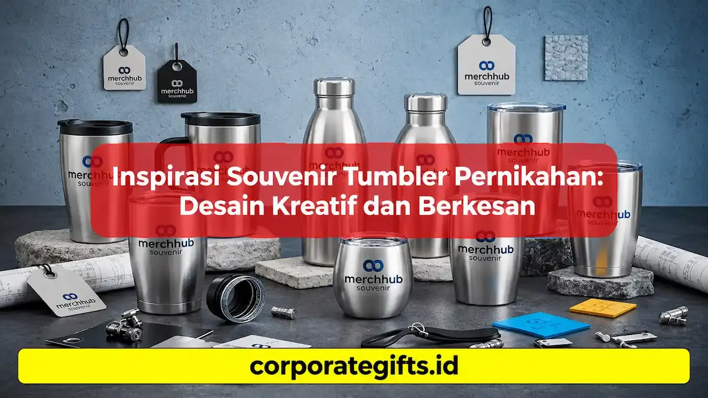

Corporate Gifts ID - Souvenir tumbler pernikahan adalah cinderamata pesta pernikahan berupa botol minum berkualitas yang dipersonalisasi secara presisi dengan inisial nama mempelai, tanggal momen bahagia, atau kutipan syukur. Berbeda dari souvenir konvensional seperti gantungan kunci atau kipas plastik yang sering berakhir menumpuk di laci, tumbler custom menawarkan nilai guna fungsional harian yang tinggi, ketahanan jangka panjang, serta kesan eksklusif yang tak terlupakan bagi setiap tamu undangan yang hadir.
Baik untuk resepsi pernikahan bergaya ballroom formal, intimate outdoor wedding, maupun acara syukuran keluarga, pemilihan tumbler vacuum insulated custom mampu mencerminkan apresiasi tulus pasangan pengantin sekaligus mendukung kampanye ramah lingkungan bebas botol plastik sekali pakai.
Poin Kunci Souvenir Tumbler Pernikahan:
- Nilai Manfaat Harian: Terpakai nyata untuk membawa air hangat atau dingin saat bekerja di kantor maupun beraktivitas di luar rumah.
- Daya Tahan Tinggi: Material stainless steel food-grade SUS 304 tidak mudah pecah, anti karat, dan tahan bertahun-tahun.
- Kustomisasi Elegan: Menggunakan teknik grafir laser permanen yang tidak mudah luntur atau terkelupas saat dicuci.
- Pilihan Desain Fleksibel: Mudah disesuaikan dengan beragam tema dekorasi pesta mulai dari rustic, modern minimalis, hingga mewah klasik.
- Nilai Keberlanjutan (Eco-Friendly): Mengurangi sampah plastik dengan mendorong kebiasaan membawa wadah minum reusable.
Mengapa Souvenir Tumbler Sangat Populer untuk Acara Pernikahan
Tren pemilihan cinderamata pernikahan dalam beberapa tahun terakhir mengalami pergeseran signifikan dari barang dekoratif pajangan menuju cinderamata fungsional (utility gifts). Beberapa faktor utama yang menjadikan tumbler sebagai primadona souvenir pernikahan meliputi:
- Fungsionalitas Termal Optimal: Tumbler termos berkualitas mampu menahan suhu minuman panas hingga 8 jam dan minuman dingin hingga 12 jam, sangat cocok untuk menemani rutinitas harian tamu undangan.
- Tampilan Visual yang Mewah: Finishing bodi matte, rubberized coating, atau sentuhan aksen tutup kayu bambu alami memberikan impresi hadiah premium berkelas.
- Media Kenang-Kenangan Abadi: Setiap kali tamu menikmati kopi atau teh dari tumbler tersebut, momen indah perayaan pernikahan Anda akan selalu diingat kembali.
Bagi Anda yang ingin melihat variasi model dan spesifikasi teknis botol minum korporat dan cinderamata, simak ulasan lengkap pada panduan Memilih Tumbler Custom Souvenir Perusahaan untuk Promosi.
5 Ide Desain Souvenir Tumbler Pernikahan yang Berkesan
Agar cinderamata tampil estetik dan memiliki daya tarik visual yang kuat, berikut adalah 5 konsep desain grafir dan cetak yang paling digemari pasangan pengantin modern:
1. Desain Minimalis Elegan dengan Tipografi Modern
Konsep minimalis mengedepankan kesederhanaan yang mewah. Desain ini biasanya hanya menampilkan inisial monogram pasangan (misalnya: R & A) dengan tipografi serif atau sans-serif modern yang rapi di salah satu sisi bodi tumbler, dipadukan dengan palet warna netral seperti hitam doff, putih pearl, abu-abu slate, atau rose gold.
2. Motif Floral dan Ornamen Botanikal Lembut
Bagi pernikahan yang mengusung tema taman (garden party) atau nuansa alam, ilustrasi daun eucalyptus, rangkaian bunga mawar, atau ranting zaitun melingkar sangat cocok menjadi bingkai inisial nama mempelai. Motif floral memberikan kesan anggun, hangat, dan romantis.

Teknik laser engraving pada permukaan tumbler stainless menghadirkan detail monogram dan ornamen yang sangat presisi serta tidak mudah pudar.
3. Tema Rustic dan Sentuhan Vintage Klasik
Kombinasi bodi tumbler stainless steel dengan tutup beraksen kayu bambu solid menciptakan perpaduan estetika rustic yang natural. Desain grafir bertema vintage sering memanfaatkan font kaligrafi klasik dengan ornamen tali tambang atau pita geometris retro.
4. Ilustrasi Karikatur Siluet Pasangan Pengantin
Untuk konsep pesta yang lebih santai dan ceria, ilustrasi siluet wajah atau karikatur chibi kedua mempelai yang dicetak menggunakan teknologi digital UV print full color akan memberikan kesan unik dan sangat personal bagi para sahabat serta tamu muda.
5. Personalisasi Kutipan Cinta dan Pesan Syukur
Menyematkan kalimat singkat penuh makna seperti "Forever Starts Today", "Warm Wishes & Sweet Memories", atau kalimat syukur atas kehadiran tamu di bagian belakang tumbler memberikan sentuhan emosional yang menyentuh hati penerima cinderamata.
Tips Penting Kustomisasi Souvenir Tumbler agar Tampak Premium
Dalam merencanakan pengadaan souvenir tumbler pernikahan, perhatikan beberapa faktor teknis berikut agar hasil akhirnya sempurna:
- Pilih Material Berkualitas Food-Grade: Pastikan material wadah adalah stainless steel SUS 304 ganda (double-wall vacuum) atau kaca borosilikat tebal yang aman untuk kesehatan (BPA-Free) serta tidak menimbulkan bau logam pada air minum.
- Utamakan Teknik Grafir Laser: Untuk produk berbahan stainless steel, teknik laser engraving adalah pilihan terbaik karena mengikis lapisan cat secara presisi, menghasilkan warna silver metalik yang mewah dan tahan seumur hidup tanpa risiko terkelupas.
- Pilih Ukuran Kapasitas yang Ergonomis: Kapasitas 450 ml hingga 500 ml adalah ukuran paling ideal karena mudah dimasukkan ke dalam tas kerja maupun cup holder mobil tanpa terasa terlalu berat.
- Sempurnakan dengan Kemasan Eksklusif: Lengkapi tumbler dengan box packaging silinder kraft ramah lingkungan, rigid hardbox dengan pita satin, atau reusable pouch serut bludru lengkap dengan kartu ucapan terima kasih.
Tabel Matriks Perbandingan Jenis Material Souvenir Tumbler
Berikut adalah panduan matriks perbandingan material tumbler untuk membantu Anda menentukan pilihan terbaik sesuai anggaran dan konsep acara:
| Tipe Material | Karakteristik & Retensi Suhu | Metode Branding Terbaik | Kesesuaian Tema Acara |
|---|---|---|---|
| Stainless Steel SUS 304 | Double-wall vacuum insulation, menahan panas/dingin 8-12 jam, anti-karat solid. | Laser Engraving / Digital UV Print | Pernikahan Ballroom, Modern Luxury, VIP Guest. |
| Stainless Aksen Bambu | Bodi stainless dengan tutup kayu bambu alami, ramah lingkungan dan estetik. | Grafir Laser Kayu & Logam | Rustic Wedding, Outdoor Garden Party, Eco-Theme. |
| Kaca Borosilikat | Transparan jernih, tahan perubahan suhu panas/dingin, dilengkapi sleeve silikon. | Sablon Presisi / UV Print Sleeve | Intimate Wedding, Pastel Minimalist, Syukuran Keluarga. |
| Smart LED Thermos | Layar sentuh LED display penunjuk suhu digital cerdas pada tutup botol. | Laser Engraving Presisi | Modern Tech Wedding, Hampers Keluarga Inti & Bridesmaid. |
Menyelaraskan Desain Tumbler dengan Konsep Resepsi
Keindahan souvenir pernikahan akan semakin terpancar ketika desainnya menyatu selaras dengan tema dekorasi keseluruhan:
- Pernikahan Formal & Glamour: Gunakan tumbler hitam doff atau champagne gold dengan grafir inisial monogram bergaris halus yang dikemas dalam kotak rigid box bertutup mika bening.
- Pernikahan Outdoor & Bohemian: Pilih tumbler bermaterial stainless dengan aksen kayu bambu, dibungkus kain goni gantung atau pouch katun blacu bernuansa earth-tone.
- Pernikahan Modern Monokrom: Padukan tumbler berbalut finishing rubberized matte hitam-putih dengan tipografi minimalis tanpa ornamen berlebih.
Untuk inspirasi cinderamata custom bernuansa premium lainnya, Anda dapat membaca ulasan Souvenir Kantor Premium Investasi Citra Perusahaan.
Kesimpulan dan Konsultasi Custom Souvenir
Souvenir tumbler pernikahan adalah pilihan hadiah yang cerdas, bernilai guna tinggi, dan elegan. Dengan memilih bahan berkualitas food-grade, menerapkan desain grafir yang proporsional, serta melengkapinya dengan packaging yang rapi, cinderamata pernikahan Anda akan memberikan kesan mendalam dan membawa kenangan manis bagi seluruh tamu undangan.
CorporateGifts.ID siap membantu mewujudkan kebutuhan souvenir tumbler custom, paket gift set pernikahan, hampers keluarga, dan cinderamata acara Anda dengan pengerjaan grafir presisi, kontrol kualitas ketat, dan pengiriman aman ke seluruh wilayah Indonesia.